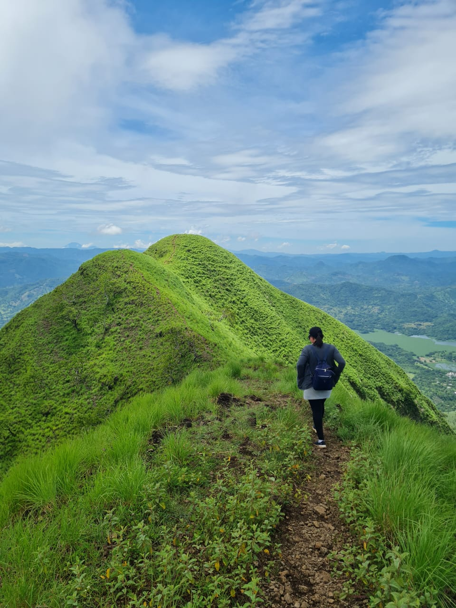
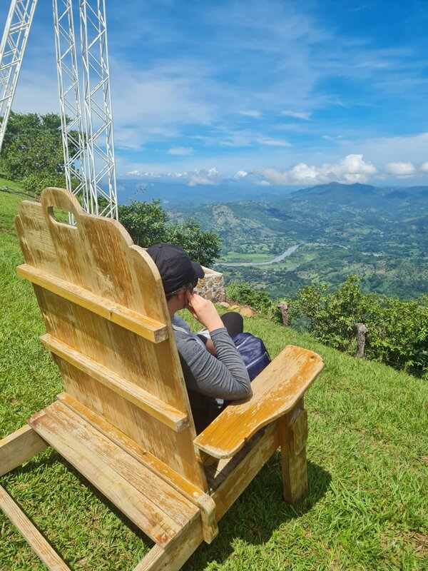

Have an adventure
Incredible views and fresh air

Hiking great mountains
walking with the nature

Eramón Mountain (also known as Cerro Iramón), is located at a height of 937 meters above sea level in the municipality of San Antonio de La Cruz, in Chalatenango Eramón means “Sierra de los Conejos” (which comes from era: saw and mon: rabbit). El Eramón is considered a historical place, since it was the cradle of an ancient population called “Aguacao” which is currently called Arcatao.
On this hill you can find archaeological remains that confirm the existence of an indigenous population. These ruins consist of two superimposed terraces, quadrilong in shape, 250 and 100 meters wide; in a tumulus or mound that rises above the upper terrace, like an oratory; and in a profusion of stone and ceramic objects.